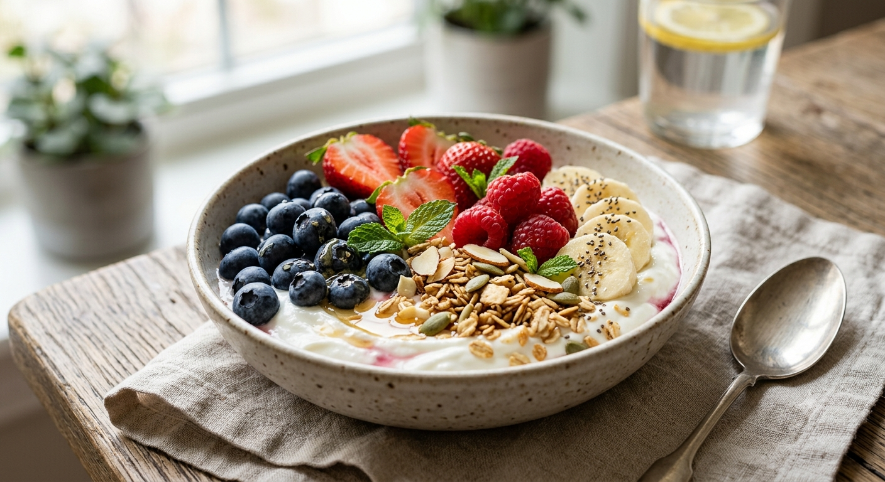

🏠
Greek Yogurt Fruit Bowl

Description
This Greek yogurt fruit bowl combines creamy Greek yogurt with fresh fruits and
crunchy nuts.
It is rich in protein, vitamins, and other nutrients, making it a healthy and refreshing meal.
You can enjoy it for breakfast or as a quick snack. It is easy to prepare and can be customized
with your favorite fruits and toppings!
Ingredients
- Greek yogurt
- Strawberries
- Banana
- Blueberries
- Almonds
- Honey
- Chia seeds
Steps
- Prepare the Fruits: Wash the strawberries and blueberries. Slice the
strawberries and banana into small
pieces.
- Add the Yogurt: Place the Greek yogurt into a bowl and spread it evenly.
- Add the Fruits: Arrange the strawberries, banana, and blueberries on top of the
yogurt.
- Add the Toppings: Sprinkle the almonds and chia seeds over the fruit.
- Serve: Drizzle a small amount of honey over the bowl and serve immediately.